Pixel Shading阶段会决定每个像素最终的颜色和透明度，而决定这些颜色的公式，就是所谓的Shading Model
前言
这一部分其实更多是面对 TA 向的内容，掌握 Shading 基础，是各种 真实感渲染、卡通渲染… 的技术基础。虽然说大多商业引擎已经实现了非常少成熟的 PBR、NBR … 渲染框架，网上各种解决方案、优化技术也非常普遍，但是作为引擎（图形）开发程序，掌握这些基础的 Shading 知识仍然是非常必要的。
23年底时，曾面试 Garena 的图形引擎岗位，其中一个基础的问题没答完整：“请介绍 Phong Shading 的渲染公式”。这个经历提醒自己，一定要夯实基础，万丈高楼平地起，积沙成塔，只有底部足够扎实，才能爬得更高。
Shading Models
RealTimeRendering 作者选择将这个章节放在 Textures 纹理之前，我觉得是有失偏颇的。应该是先有纹理贴图，继而发现朴素的贴图缺少光照，表现非常虚假、平淡，继而引入一系列逐渐复杂的 Shading Models，其目的是 优化纹理在不同光照、视角、及法线下的视觉表现，只不过通过一些 计算调参 的手段罢了。
我们从 第一性原理 出发，先考虑最简单的原则：
1.
将采样的 Texture 简单粗暴的渲染出来，即 Shading Model 是：
$$C_{shading}=C_{tex}$$
参考 LearnOpenGL的示例，得到的效果是明显不真实的：
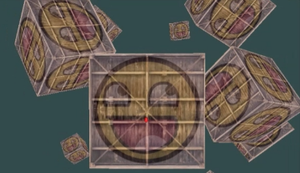
2.
为什么这个最简单的 Shading Model 渲染出的结果具有强烈的不真实感？想象真实世界的物体，最主要的特征是（太阳）光线带来的强烈视觉感，而这个视觉感与远近没有明显的关系，影响最大的因素是与光线的夹角。
如果难以理解，想象一束光照射在镜子上：
- 当垂直入射时，是刺眼的白色（假设白光）
- 当（接近）水平入射时，是接近物体本身的颜色
根据这个从物理世界观察到的规律，我们进一步优化 Shading Model：
$$
C_{Shading} =
\begin{cases}
C_{Light} & if \ angle \geq N^\circ \\
C_{Tex} & else\\
\end{cases}
$$
实际计算可以作一些插值，以太阳光照射水面为例，效果大概如下所示：
3. Gooch Shading
上面都是自己的瞎扯，这里尝试进入正题。Gooch Shading 是一个足够简单但经典的着色模型，它将光照颜色分为两部分区域：
- 法线越接近光照：使用暖色调
- 法线越远离光照：使用冷色调
具体公式如下，其中 2(n*l)n - l 是用来计算 l 相对于法线的反射向量，在 shader 可以使用 reflect 函数代替：
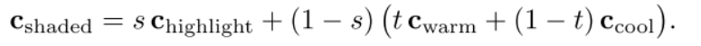
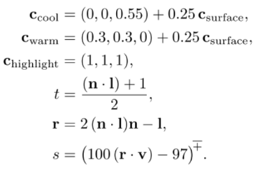
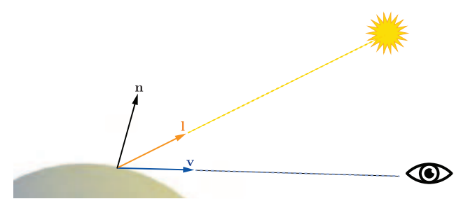
如何区分 冷色调 和 暖色调？
Cool：偏蓝色的Warm：偏红色、橘色的
鉴于这个特征，Gooch Shading 又被称为 Cool to Warm Shading，实际效果如图所示：
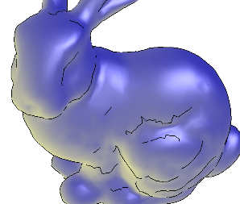
4. Lambertian Shading
【GAMES101】Shading - Lambertian Shading | Luhao’s Blog
5. Phong Shading
【GAMES101】Shading - Phong Shading | Luhao’s Blog
Light Sources
想要更好地描述光源对于物体表面渲染的影响，我们需要对光照这个行为进行定量地分析，这里列出 RTR 书中的分析思路：
1. 光 == 射线
先将 光照对表面的影响，可视化为 一组平行的射线，同时射线的密度代表光照的强度。
- 对于一个固定光源，不同射线的间距是固定的 $d$
- 垂直入射时，到达表面的长度是 $d$
- 倾斜入射时，到达表面的长度是 $d / cos\theta$
- 背面入射时（$\theta \geq 90$），到达表面的长度是 $0$
因为 $n \cdot l = cos\theta$，所以（单位）光照的影响长度为 $d / (n \cdot l)$
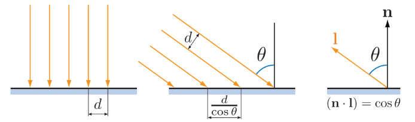
考虑到光照随面积的分布是均匀的，当单位光照影响的长度越大，其所受光的影响也就越弱。
假设 $d$ 是一个单位为1的值，那么（单位）光照的影响强度为 $max(0, n \cdot l)$
2. 有光 & 无光
PS：这里有一点困惑，假设自然界完全无光的情况下，那么物体表现应该也是纯黑色？
本章将物体表面区分为两种状态：无光、有光的环境，而最终的呈现是这两种结果的组合。
- 无光：$f_{unlit}$，阴影中死黑的部分
- 有光：$f_{lit}$，取决于光照公式的选取，如
Lambert、Phong... - 光源颜色：$c_{lit}$，通过缩放还可以表示光照的强度
此时，对于一个光源的光照公式可以表示为：
$$C_{shading} = f_{unlit} + c_{light} f_{lit}$$
如果扩展到多个光源，那么有：
$$C_{shading} = f_{unlit} + (\sum_{i=1}^{n}c_{light} f_{lit})$$
结合前面 Shading Model 介绍的 Gooch Shading 模型，我们可以为上面公式套上：
- $f_{unlit} = (0, 0, 0)$
- $f_{lit} = f_{Gooch\ Shading}$
此时就得到一个完整的光照模型啦~ 但是考虑到自然界存在着无时无刻不发挥作用的间接光，这里将 $f_{unlit}$ 取为全死黑，显然是不科学的，后续可以继续改进。
2.1 方向光
Directional Light 是一个最简单的光源模型，象征自然界的太阳。它具有如下特征：
- 方向 $l$ 恒定，因此又称为 平行光
- 光源颜色（强度）$c_{light}$ 固定，不考虑任何衰减（伟大的太阳！）
- 没有位置的概念
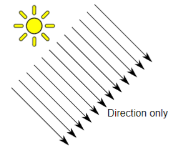
因此在 shading 中可以考虑如下定义：
struct DirectionalLight {
vec3 direction;
vec3 ambient;
vec3 diffuse;
vec3 specular;
};
void main()
{
vec3 lightDir = normalize(-light.direction);
[...]
}
2.2 点光
Point Light 象征自然界的电灯泡，它的特征如下：
- 方向 $l$ 向所有方向均匀发射光线
- 强度 $c_{light}$ 随距离衰减
- 有明确的位置概念
RTR 书中使用下图解释 强度随距离衰减。考虑到单位光线影响的范围，随距离 $r$ 的增大而平方增长，因此：光线强度与 $1 / r^{2}$ 成正比。
注意，这个衰减并不是因为 能量随传播的衰减。
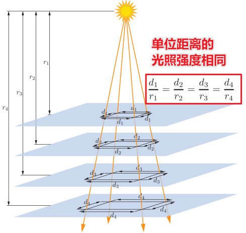
因此，对于距离为 $r$ 处的光源强度可以表示为：（这里选取了一个参考值 $c_{light_{0}}$，表示光源在距离为 $r_{0}$时的光照参数，你可以通过度量等方式定义它）
$$c_{light_{r}} = c_{light_{0}} (\frac{r_{0}}{r})^{2}$$
这个公式称为 Inverse-square law - Wikipedia，即平方反比定律，物理学中存在非常多类似的例子，例如：万有引力定律、库仑定律…
在实际的工程使用中，它存在一个非常明显的问题，即当 $r$ 无穷趋近于0时（或者干脆取值为0），那么光源强度会是一个趋向无穷大的取值，这显然是无法接受的。对此，商业引擎有几种优化手段：
- Unreal：距离叠加一个极小的数，实际取值是 $1 cm$
$$c_{light_r}=C_{light_0}{\frac{r_{0}^{2}}{r^{2}+\epsilon}}.$$ - CryEngine：限定 $r$ 的最小值
$$c_{light_{r}}=c_{light_{0}} (\frac{r_{0}} {max(r,r_{m i n})})^{2}$$
物理学解释
- 从物理学角度解释，
CryEngine的做法更科学。因为$r_{min}$在物理中表示发光物体的物理半径，比它还小的距离，对应着光源内部的着色表面，这在现实中是不可能发生的。
实际开发中，为了性能考虑，我们希望 光照强度在某个有限的距离处，能够乖乖地衰减到0，因此会引入一些距离衰减函数来实现这一目的，其中甚至包括指数衰减，这里不详细介绍。
另一方面，为了让点光的效果更贴近现实，OGRE Engine 引入一些复杂的衰减函数来实现点光，参考阅读：
2.3 聚光灯
TODO: SpotLight
多种光源对比
- 从左到右依次为：平行光、点光（无衰减）、聚光灯（有衰减）
- 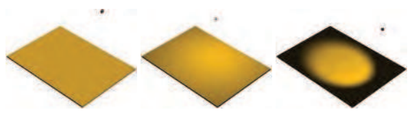
Anti-Aliasing
抗锯齿的部分，看 GAMES101 时有作总结，这里不详细展开。不过有机会还是希望实践落地 SMAA、TAA …
半透明
TODO：这部分讨论的是，光线穿过半透明物体的效果。
显示编码
推荐阅读：
- Gamma、Linear、sRGB 和Unity Color Space，你真懂了吗？ - 知乎
- 伽马空间与线性空间详解-腾讯游戏学堂
- Gamma and Linear Space - What They Are and How They Differ
Gamma Space
Gamma Space 将颜色输出为 2.2 次幂，所谓伽马矫正是指如下公式：
$$C_{gamma} = (C_{linear})^{2.2}$$
为什么会引入伽马矫正？一般有两个原因：
- 传统 CRT 显示器的设计原因
- 人眼对暗部辨识度高于明部
以第2点为例，我们可以理解为：如果在 0% 和 50% 明暗处分别增加 10% 的亮度，那么人眼对前者的感知更加明显，这也意味着人眼对暗处更敏感。换言之，我们应该给暗处更大的存储、展示细节。
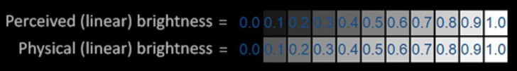
如下图，中间是标准的线性空间，右侧是 Gamma-2.2 空间，可以这么理解：
- 左一：给亮部更大精度
- 右一：给暗部更大精度
显然右一更符合人眼的观感，这正解释了为什么要将图像转化到 Gamma 空间！另外，我们购买的显示器一般也是 Gamma2.2 空间（又称为 sRGB）。
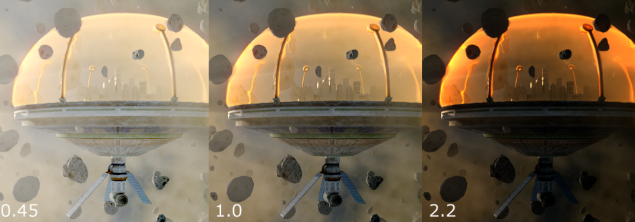
虽然 Gamma Space 更符合人眼的观感，但是它不利于 Shading 的计算，因此一个正常的渲染流程是：
- png/jpg：sRGB
- shading：linear
- display：sRGB（取决于硬件，一般是 sRGB 空间）
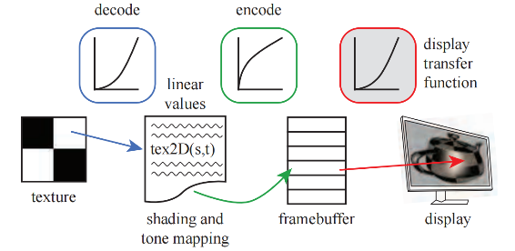
sRGB
sRGB又称为 Gamma-0.45空间，即会给亮部更多的精度和细节。- 当
sRGB叠加一次 Gamma矫正 之后，就会得到一个正确的 Linear空间。